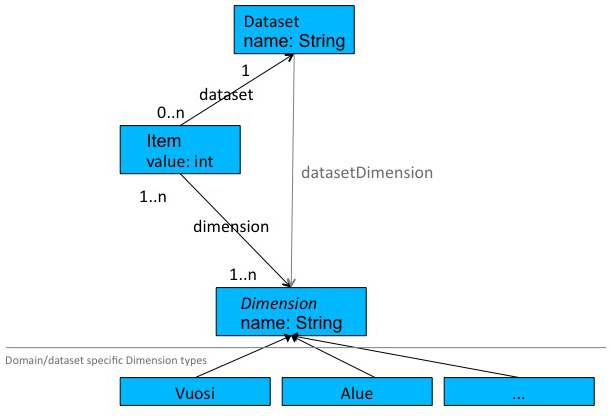
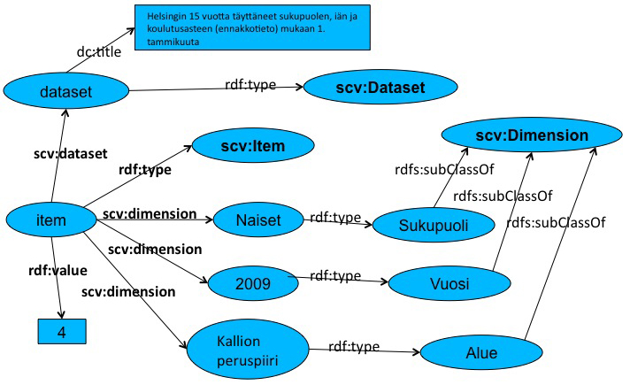

SPARQL Example Queries for semantic.hri.fi
Frontpage
Faceted search
SPARQL
Map demo
SCOVO
SCOVO is a vocabulary for representing statistical data on the Web.
Semantic.hri.fi uses SCOVO for representing statistics of Helsinki region. SCOVO datamodel,
consists of Datasets containing statistical Items (statistical values). Semantics of each item is defined by
linking it to subclasses of Dimension, e.g. Year or Area.

Below is a picture of Item depicting number (4) of women of age range 15-24 with higher education
in Kallion peruspiiri (area) in year 2009. For brevity only dimensions gender, year and area are
shown.

Item queries can be formed using Facet search and then clicking "Show SPARQL".
SPARQL allows constraints on values as well as result ordering.
SPARQL Examples
NOTE: For readability PREFIX declarations are omitted from these example queries.
As SPARQL test page prepends those default namespaces to hand-written
queries, these examples can be copy-pasted directly into the query box.
NOTE: Semantic.hri.fi's SPARQL-interface requires that limit and offset to a query be given as
HTTP-parameters instead of as part of a query itself. This limitation is because of an enforced
maximum result size limit (100 000 rows). All data can be read programmatically by paging
through the results using OFFSET along with limit.
NOTE: It is possible that overly complex queries take "too long" to finish. In most cases
these queries can easily be broken into a series of smaller fast queries executed programmatically.
All dimensions and values
SELECT ?dimension ?dimensionValue ?dimensionValueName
WHERE {
?dimension rdfs:subClassOf scv:Dimension .
?dimensionValue rdf:type ?dimension ;
dc:title ?dimensionValueName .
}
All information about areas
SELECT ?area ?pred ?obj
WHERE {
?area rdf:type dimension:Alue;
?pred ?obj.
}
Namespace mappings
SELECT ?prefix str(?ns) as ?namespace
WHERE {
?ns meta:nsPrefix ?prefix .
}
Areas with over all population over 50 000 in year 2010 with one level of hierarchy, ordered biggest first
As not all areas have a broader area, skos:broader is defined as an OPTIONAL element of the query.
SELECT ?areaParentName ?areaName ?value
WHERE {
?item rdf:type scv:Item;
rdf:value ?value;
scv:dimension vuosi:_2010;
scv:dimension väestön_määrä:Henkilöitä_yhteensä;
scv:dimension ?area.
?area rdf:type dimension:Alue;
dc:title ?areaName.
OPTIONAL { ?area skos:broader ?areaParent. ?areaParent dc:title ?areaParentName .}
FILTER (?value >= 50000)
}
Areas with average income over 40 000 and more working women than men in year 2007
SELECT ?areaName ?avgIncome ?workingWomen ?workingMen
WHERE {
[ rdf:value ?avgIncome;
scv:dimension ?area;
scv:dimension tuloluokka:Keskitulo;
scv:dimension vuosi:_2007
] .
FILTER ( ?avgIncome > 40000 )
?area rdf:type dimension:Alue; dc:title ?areaName.
[ scv:dimension ?area;
rdf:value ?workingWomen;
scv:dimension sukupuoli:Naiset;
scv:dimension vuosi:_2007;
scv:dimension ikä:Työll__työvoima_yhteensä;
scv:dimension yksikkö:Työssä_käyvä_henkilö
] .
[ scv:dimension ?area;
rdf:value ?workingMen;
scv:dimension sukupuoli:Miehet;
scv:dimension vuosi:_2007;
scv:dimension ikä:Työll__työvoima_yhteensä;
scv:dimension yksikkö:Työssä_käyvä_henkilö
] .
FILTER ( ?workingWomen > ?workingMen )
}